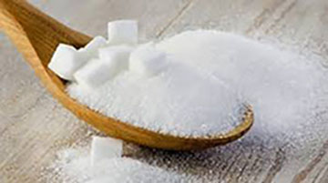
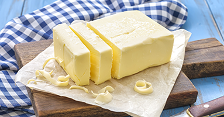
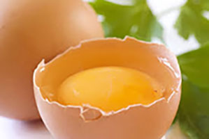
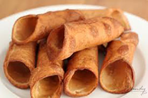
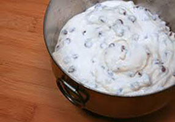
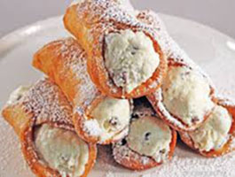

Homemade Cannoli Recipe
Ingredients for the Shells
- 2 cups all-purpose flour
- 1 tablespoon granulated sugar
- 1/4 teaspoon kosher salt
- 1 tablespoon plus 2 teaspoons unsalted butter, cut into small pieces
- 1 egg yolk
- 1/2 cup dry white wine
Ingredients for the Filling
- 2 cups ricotta cheese, preferably whole milk
- 3/4 cup powdered sugar
- 1 teaspoon ground cinnamon
- 1/4 teaspoon allspice
- 1/4 cup heavy cream
- 1/4 cup small semisweet chocolate chips
- 1 lemon
- 1 quart canola oil, for frying
- Flour, for rolling
- 1 egg, lightly beaten, for egg wash
- Powdered sugar, for dusting



Directions for the Shell Dough
- In a medium bowl, sift together the flour, sugar and salt.
- Work the butter pieces into the flour with your fingers until the mixture becomes coarse and sandy.
- Add the egg yolk and the white wine and mix until it becomes a smooth dough.
- Spread a piece of plastic wrap on a flat surface and place the dough in the center.
- Wrap the plastic loosely around it and press the dough to fill the gap. Flattening the dough will mean less rolling later.
- Let it rest in the fridge for a few minutes while you make the filling.
Directions for the Filling
- In a medium bowl, whisk the ricotta until smooth.
- Sift in the powdered sugar, cinnamon, and allspice.
- Mix to blend.
- In a separate bowl (or in the bowl of an electric mixer fitted with the whisk attachment), beat the heavy cream until fairly stiff.
- Using a rubber spatula, gently fold the cream into the ricotta mixture.
- Stir in the chocolate chips.
- Lightly zest the exterior of the lemon and stir it into the ricotta.
- Refrigerate for a half hour to an hour.
Directions for Rolling and Frying the Shells
- In a medium pot with a heavy bottom, heat the canola oil to 360 degrees F.
- Meanwhile, sift an even layer of flour on a flat surface.
- Four a rolling pin.
- Roll the dough until it is very thin (about 1/8-inch thick).
- Cut the dough into fourths and work in small batches.
- Use any glass or small bowl that has a 3-to-4-inch diameter.
- Cut rounds, tracing around each one to assure the dough has been fully cut. You should have about 24 circles.
- Wrap each circle around a cannoli mold. Use a little of the egg wash on the edge of each round to seal it shut and to assure it won't slide or fall of the mold before pressing it colsed over the mold.
- Flare the edges out slightly from the mold. Flaring will allow the oil to penetrate each cannoli shell as they fry.
- Use a pair of tongs to hold the edge of the mold as you submerge and fry the shell in the oil until crispy, 2 to 3 minutes.
- Remove from the oil, and holding the mold in one hand with your tongsm gently frip the shell with your other hand with a kitchen towl and carefully slide it off the mold.
- Set aside to cool.
- Repeat with all of the circles.
Directions for Filling the Cannolis
- Just before serving, use a pastry bag without a tip to pipe the ricotta into the cannoli molds.
- Fill the cannoli shells from both ends so the cream runs through the whole shell.
- Dust with powdered sugar. Powdered sugar gives that little extra sweetness and added texture to the exterior.
- Serve immediately.


